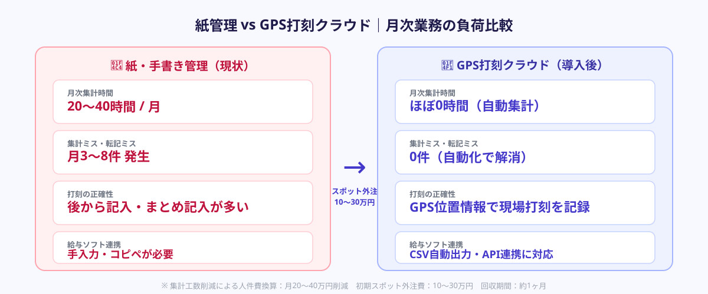
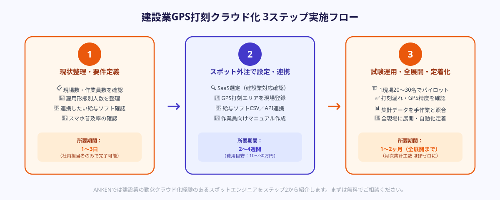

建設業の勤怠管理が「紙」から脱せない3つの理由
スマートフォンのGPS位置情報を使って、現場に到着した時点で出勤打刻をクラウドサーバーへリアルタイムに記録する勤怠管理システム。管理者はオフィスにいながら全現場の出退勤状況をリアルタイムで確認でき、月次集計・残業計算・給与計算ソフトへのデータ転送まで自動化できる。
建設業では、勤怠管理のDX化が最も遅れている業種の一つです。多くの中小建設会社が今も「紙の出勤簿」「ホワイトボードへの手書き」「LINEでの報告」という方法を続けています。その背景には3つの構造的な理由があります。
① 現場が毎日変わるため固定の打刻端末が置けない
オフィスワーカーと違い、建設現場は工事ごとに場所が変わります。ICカードリーダーやタイムレコーダーを設置する場所がないため、「事務所に帰ってから手書き」という後処理型の記録が定着してしまいます。現場監督が週末にまとめて転記するというケースも珍しくありません。
② 作業員の雇用形態が複雑で管理が煩雑
正社員・日雇い・一人親方・協力会社の作業員が混在するのが建設業の特徴です。雇用形態ごとに賃金計算ルール・残業の取り扱い・保険適用が異なるため、一元管理が難しく、結果として「担当者が手動で集計」という作業が毎月発生します。月次集計だけで20〜40時間かかる会社も少なくありません。
③ 導入を担える専任担当者がいない
建設業の中小企業では情シス専任者を置いている会社はほとんどありません。「何を選べばいいかわからない」「設定が複雑そう」という理由でDX化の判断を先送りにしているケースが多く、気づいたら10年以上同じ方法で管理し続けているということも珍しくありません。
GPS打刻クラウド勤怠で解消できる課題

GPS打刻クラウド勤怠システムを導入することで、建設業特有の3つの課題が解消されます。
課題1 → 解消：「どこでも打刻できる」GPS機能
スマートフォンにアプリをインストールするだけで、作業員は現場に着いたときに打刻できます。GPS機能により「現場の半径200m以内でのみ打刻可能」という設定もでき、後から打刻する不正防止にもなります。スマホを持っていない高齢の作業員向けには、現場監督のタブレットからの代理打刻機能を使う方法もあります。
課題2 → 解消：「雇用形態別の自動集計」機能
正社員・日雇い・一人親方の賃金区分をシステム上で設定しておくことで、打刻データから月次の給与計算データを自動生成できます。建設業に対応したクラウド勤怠SaaS（キンクラ・ジョブカン・マネーフォワードクラウド等）は、建設業法・社会保険対応のCSV出力形式に対応しており、既存の給与計算ソフトとの連携がスムーズです。
課題3 → 解消：「スポット外注で専任担当者なしでも導入できる」
建設業の勤怠管理クラウド化の実績があるスポットエンジニアに依頼することで、SaaSの選定・GPS設定・既存ソフト連携・作業員向けマニュアル作成まで一括で対応してもらえます。専任の情シス担当者がいなくても、「完成した状態で引き渡してもらう」ことが可能です。
3ステップでGPS打刻クラウド化を実現する方法

ステップ1｜現状の勤怠管理フローを整理し、移行要件を1枚で定義する
スポット外注を依頼する前に、現在の勤怠管理フローを簡単な数字でまとめます。スポットエンジニアへの依頼書（要件定義書）を作る必要はありません。以下の情報をメモ用紙1枚にまとめるだけで十分です。
- 現場数：月間でいくつの現場が動いているか（3現場・5現場・10現場以上）
- 作業員数：正社員・日雇い・一人親方それぞれの人数の概算
- 現在の集計方法：手書き→事務担当者が入力、LINEで報告→集計、タイムカード→給与計算ソフトへ手入力、など
- 連携したい既存ソフト：弥生給与・freee給与・マネーフォワード給与など現在使っている給与計算ソフトの名称
- スマホ利用状況：作業員のうち何割がスマホを持っているか
この情報があれば、スポットエンジニアはどのSaaSが最適か・どこをカスタム開発する必要があるかを即座に判断できます。
ANKENへのお問い合わせ時に「現場数・作業員数・連携ソフト名」の3点だけ記載いただければ、建設業の勤怠クラウド化経験のあるエンジニアを優先的にご紹介します。フォーマットは問いません。
ステップ2｜GPS打刻クラウドシステムをスポット外注で設定・連携開発する
要件が整理できたら、スポットエンジニアにSaaSの選定から設定・給与連携を一括で依頼します。依頼の範囲は「既製SaaSを設定するだけ」か「カスタム開発が必要か」で大きく変わります。
既製SaaSで対応できる場合（費用：10〜30万円、期間：2〜4週間）
現場数5〜10・作業員数30〜100名規模であれば、市販のクラウド勤怠SaaSで対応できるケースがほとんどです。スポット外注の主な作業は、GPS打刻エリアの登録・雇用形態別の設定・既存給与ソフトとのCSV連携・作業員向けのアプリ導入マニュアル作成です。建設業向けに実績のあるSaaSとして、現場ごとの打刻エリア管理やICT活用モデルに対応したものを選ぶとスムーズです。
カスタム開発が必要な場合（費用：30〜80万円、期間：2〜3ヶ月）
複数の協力会社が混在する大規模現場・独自の原価管理システムとリアルタイム連携が必要なケース・特定の建設業務システム（ANDPAD・勘定奉行等）との深いAPI連携が必要な場合はカスタム開発が必要です。この場合でも、スポット外注で「機能に絞った最小限の開発」を依頼することでフルスクラッチ開発より大幅に費用と期間を抑えられます。
ステップ3｜1現場から試験運用し、月次集計・給与計算の自動化まで定着させる
システムの設定が完了したら、いきなり全現場に展開せず、まず1現場・20〜30名規模でパイロット運用を開始します。最初の1ヶ月は以下の点を確認・調整します。
- 打刻漏れの発生状況：スマホを持ち忘れる・電池切れなどのケース。代替打刻（現場監督からの代理入力）のフローを決める
- GPS精度の確認：建物内や電波が弱いエリアでの打刻精度。必要に応じてQRコードやWi-Fi打刻との併用を検討
- 月次集計の確認：自動集計されたデータを従来の手作業での集計結果と照合して誤差がないか確認
- 給与計算ソフトへのデータ転送：CSV出力→インポートのフローをテストし、転記ミスがないか確認
1ヶ月の試験運用で問題がなければ残りの現場へ順次展開します。スポットエンジニアには試験運用期間中のサポート（1〜2週間分の保守対応）を依頼に含めておくとトラブル時に安心です。全展開が完了したあとは、月次の勤怠集計→給与計算のフローが自動化された状態で運用が回るようになります。
スポット外注の費用感・期間の目安
建設業の勤怠管理クラウド化をスポット外注に依頼する場合の費用感をまとめます。
| 対応内容 | 費用目安 | 期間目安 |
|---|---|---|
| SaaS設定＋GPS打刻エリア登録＋給与ソフトCSV連携 | 10〜20万円 | 1〜2週間 |
| 上記＋作業員マニュアル作成＋試験運用サポート込み | 20〜30万円 | 2〜4週間 |
| 独自API連携・原価管理システム連携のカスタム開発 | 30〜80万円 | 2〜3ヶ月 |
初期投資に対して、月次集計工数20〜40時間削減（事務担当者の人件費換算で月3〜6万円）、集計ミスによる給与計算の訂正コスト削減、出退勤不正防止などの効果が得られます。多くのケースで6〜12ヶ月以内に初期費用を回収できます。
よくある質問
- Q. 建設業の勤怠管理クラウド化にかかる費用はどのくらいですか？
- A. 既製SaaSの設定・給与連携をスポット外注する場合10〜30万円・2〜4週間、独自GPS打刻アプリ開発が必要な場合は30〜80万円・2〜3ヶ月が目安です。
- Q. 情シス担当者がいない中小建設会社でもクラウド勤怠システムを導入できますか？
- A. できます。スポット外注を使うことで、要件定義から設定・既存ソフト連携・作業員向け操作説明まで一括で依頼可能です。情シス不在の建設会社での導入実績が多いエンジニアをマッチングします。
- Q. GPS打刻で現場ごとに打刻可能エリアを制限できますか？
- A. 主要なクラウド勤怠SaaSはGPS打刻範囲（半径50〜500m等）を現場ごとに設定できます。複数拠点への登録と設定作業がスポット外注の主な依頼内容の一つになります。
まとめ
建設業の紙ベース勤怠管理をGPS打刻クラウドシステムへ移行するために必要な3ステップは、①現場数・作業員数・既存ソフトを整理した移行要件の定義、②スポット外注によるSaaSの設定・GPS打刻エリア登録・給与ソフト連携、③1現場からのパイロット運用と全展開・月次集計自動化の定着です。
情シス担当者がいない中小建設会社でも、スポット外注費10〜30万円・2〜4週間で月次集計工数を20〜40時間削減できるケースが増えています。「現場が毎日変わる」「雇用形態が混在している」という建設業特有の事情を理解したエンジニアに依頼することが成功のポイントです。まずはANKENで無料相談から始めてみてください。